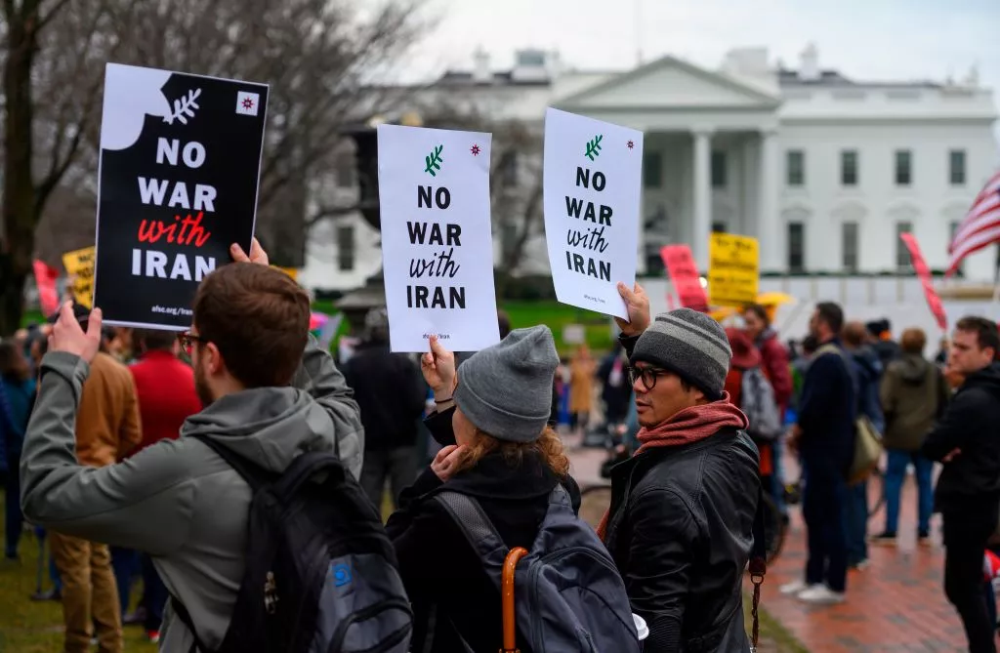

More Stories

A majority of respondents to the ABC/Ipsos survey also believed Trump's actions have made the U.S. less safe.

A spokesperson for the princes said a story about the relationship between the brothers is "false."

The alert level has been raised to four out of five, after lava gushed out the volcano amid warnings that there could be an eruption at any time.

Esper appeared to contradict the president on Sunday, when he said he had not seen evidence that Iran was planning attacks on four American embassies.

The Vermont senator said Warren is a "very good friend" of his and insisted the two will "continue to work together."

She said the House could file new articles of impeachment against the president, but expressed confidence in the case she plans to send over to the Senate this week.

The GOP senator said Nancy Pelosi "gave in" to Mitch McConnell, and that the "dangerous" Senate impeachment trial will end in days, not weeks.

Michael McCain said the 176 people killed aboard Ukraine International Airlines Flight 752 were "collateral damage" of Trump's "irresponsible" behavior.

"To compare the brutal enslavement of Black Americans to a woman's constitutionally protected right is offensive," said Utah Rep. Sandra Hollins.

"They are lying that our enemy is America," protesters chanted.